표지 — COMPANY PROFILE 2026 · CSV & DATA INTEGRITY
1 / 24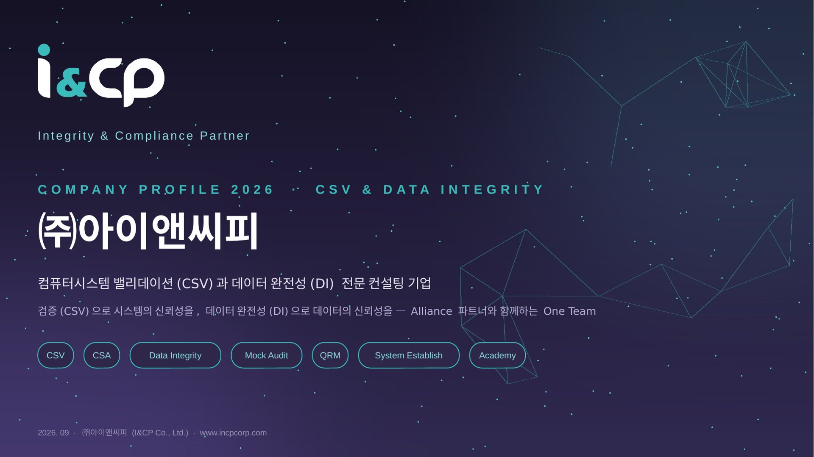
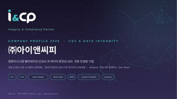
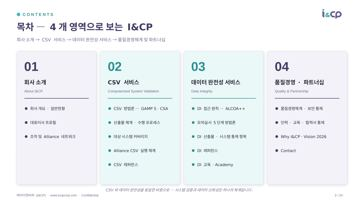
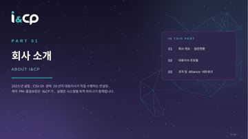
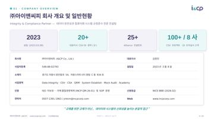
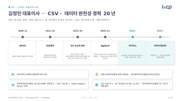
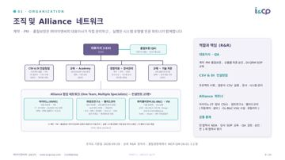
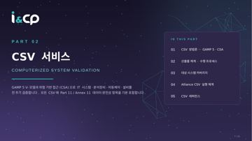
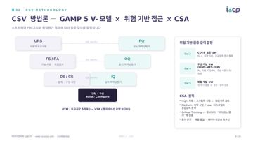
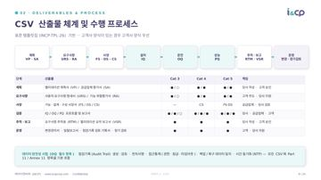
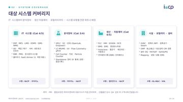
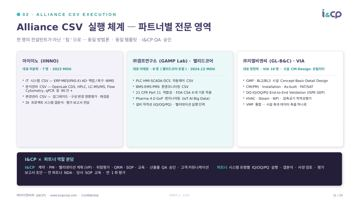
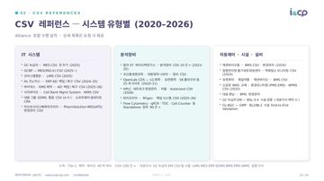
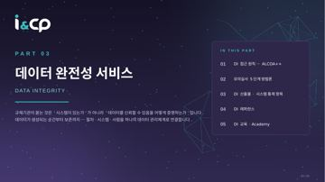
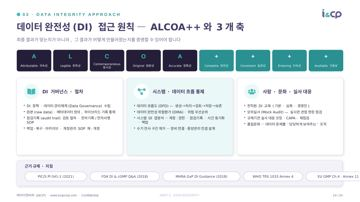
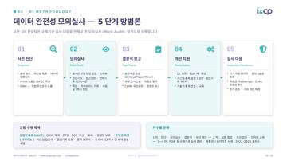
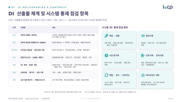
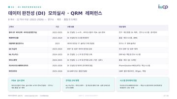
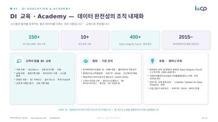
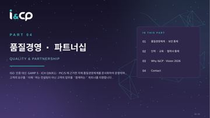
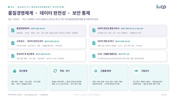
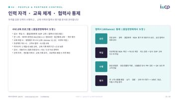
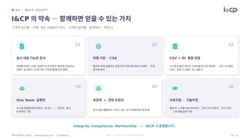
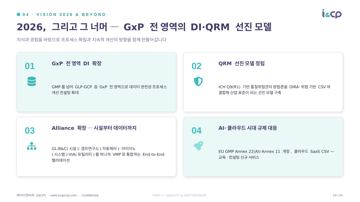
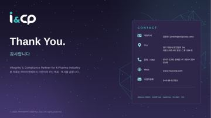
1 표지 — COMPANY PROFILE 2026 · CSV & DATA INTEGRITY2 목차 — 4개 영역으로 보는 I&CP3 PART 01 · 회사 소개4 회사 개요 및 일반현황5 김정민 대표이사 — CSV · 데이터 완전성 경력 20년6 조직 및 Alliance 네트워크7 PART 02 · CSV 서비스8 CSV 방법론 — GAMP 5 V-모델 × 위험 기반 접근 × CSA9 CSV 산출물 체계 및 수행 프로세스10 대상 시스템 커버리지11 Alliance CSV 실행 체계 — 파트너별 전문 영역12 CSV 레퍼런스 — 시스템 유형별 (2020–2026)13 PART 03 · 데이터 완전성 서비스14 데이터 완전성(DI) 접근 원칙 — ALCOA++와 3개 축15 데이터 완전성 모의실사 — 5단계 방법론16 DI 산출물 체계 및 시스템 통제 점검 항목17 데이터 완전성(DI) 모의실사 · QRM 레퍼런스18 DI 교육 · Academy — 데이터 완전성의 조직 내재화19 PART 04 · 품질경영 · 파트너십20 품질경영체계 · 데이터 완전성 · 보안 통제21 인력 자격 · 교육 체계 · 협력사 통제22 I&CP의 약속 — 함께하면 얻을 수 있는 가치23 2026, 그리고 그 너머 — GxP 전 영역의 DI·QRM 선진 모델24 Thank You · Contact
← → 방향키, 화면 좌우 클릭, 휴대폰에서는 옆으로 밀어서 넘길 수 있습니다. 이 자료는 웹에서 보기 전용입니다.